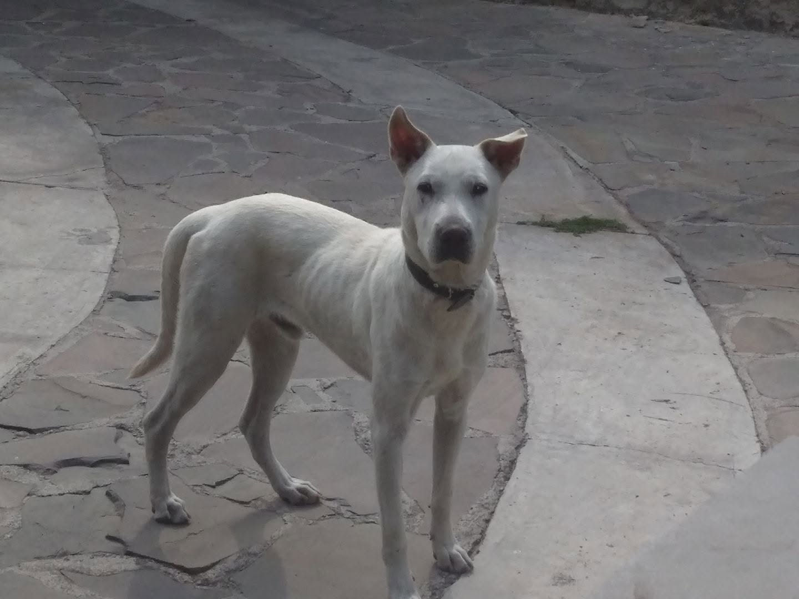
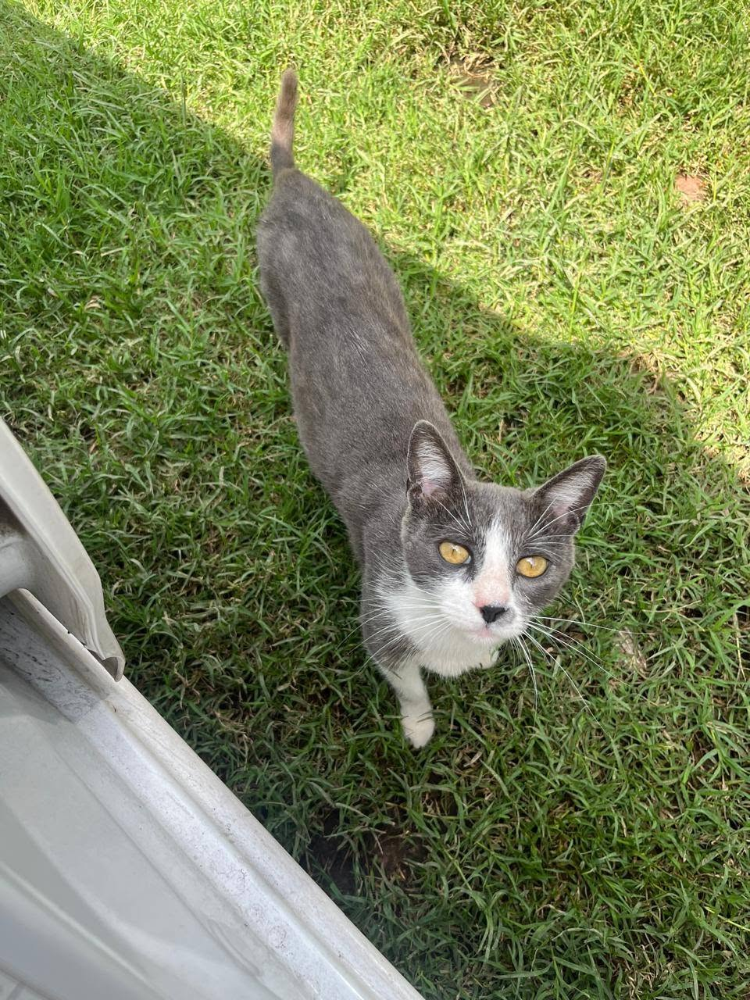
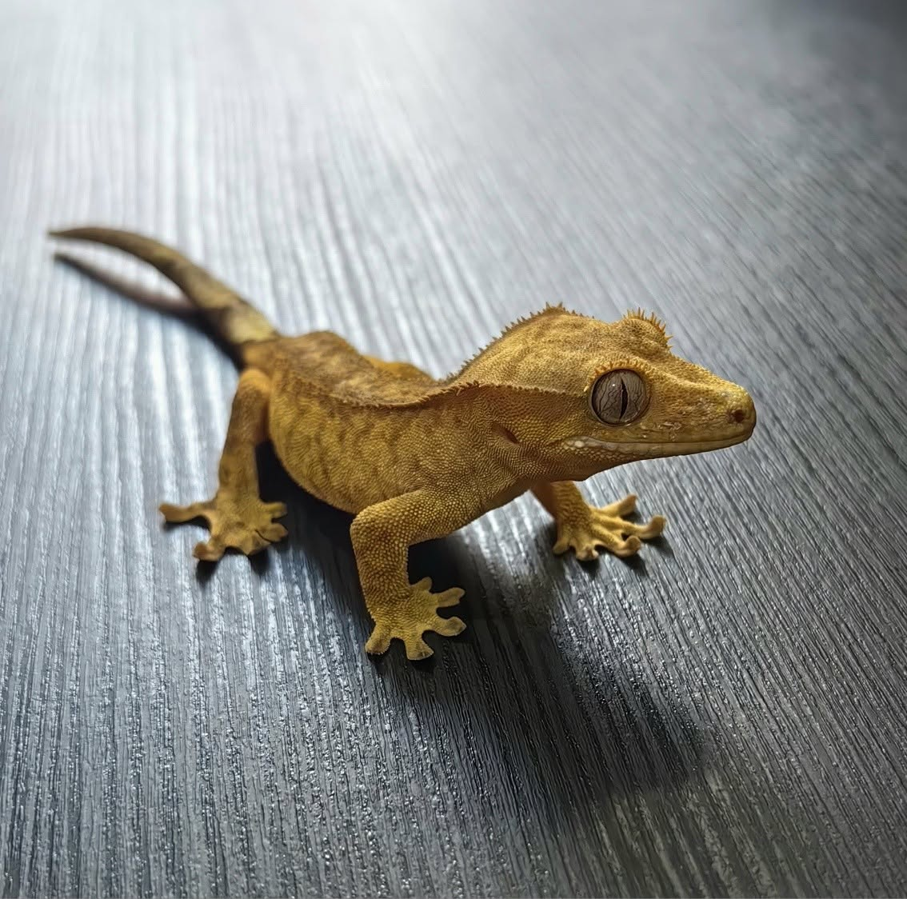

Explorá
Conocé a los animales disponibles en nuestra página de adopciones y encontrá a tu compañero ideal.
En Wild Project transformamos vidas dándoles una segunda oportunidad a perros, gatos y especies exóticas. No somos solo un refugio; somos un puente hacia hogares informados y comprometidos.
Un proceso simple, responsable y amoroso en cuatro pasos.
Conocé a los animales disponibles en nuestra página de adopciones y encontrá a tu compañero ideal.
Completá el formulario de interés y nuestro equipo te asesorará personalmente.
Realizamos una breve entrevista para asegurarnos de que el animal esté en el hogar adecuado.
¡Bienvenido a la familia! Te acompañamos en el proceso de adaptación con seguimiento post-adopción.
Cada uno espera un hogar lleno de amor. ¿Podrías ser vos?

Perro DisponibleMax es un perro cariñoso y lleno de energía. Le encanta jugar al aire libre y dar paseos largos. Ideal para familias activas.
Adoptar a Max
Gato DisponibleKitty es una gata dulce y tranquila. Le encanta acurrucarse en el sofá y disfrutar de la compañía humana. Perfecta para departamentos.
Adoptar a Kitty
Exótico DisponibleRex es un gecko curioso y tranquilo. Requiere cuidados específicos de temperatura y alimentación. Ideal para adoptantes con experiencia en reptiles.
Adoptar a RexYa sea adoptando, siendo voluntario o simplemente compartiendo nuestra causa, cada acción cuenta para construir un mundo mejor para nuestros compañeros animales.
Contactanos hoy